Shiki: Fuyumi Ono
El vitalismo de Sotoba
Notas Conjuntas - Marzo
En Shiki (me remito por entero a la novela) se puede identificar al menos 3 puntos fundamentales de la obra que clarifican la dirección de la historia y focalización de susfiguras:Estos puntos son:
- Ensayo de Seishin
- El concepto de Sotoba
- El Misterio principal de la casa Kanemasa
El eje de Kanemasa no es más que el misterio en el que se desenvolverá todas las subtramas abiertas en todas las familias por incidentes ocurridos (las cabezas desprendidas, el camión de mudanzas, los encuentros foráneos y finalmente los asesinatos más recientes ) poco o mucho el pueblo de Sotoba pone entre dicha a la casa de Kanemasa como principal sospecha de ese desencadenamiento de acontecimientos completamente sorprendentes.
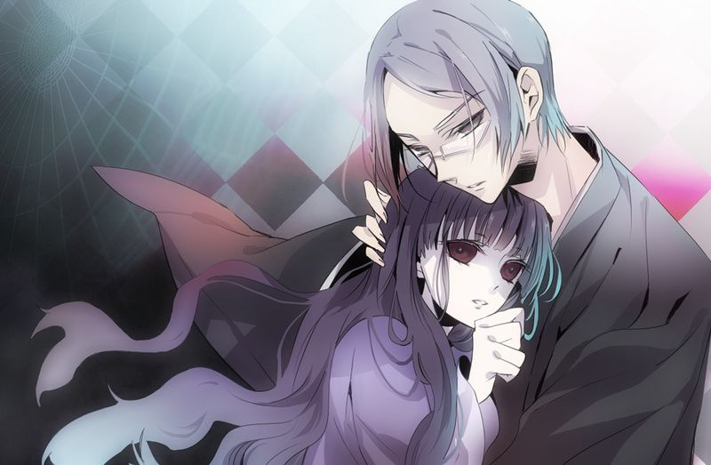
Ensayo de Seishin & Concepto de Sotoba
El Ensayo de Seishin traza el concepto capital en el que la que Sotoba se focaliza en la
medida en la que se desarrolla la tragedia "El pueblo está rodeado de muerte". El
concepto poético en relación con conflicto moral trascendente que presenta la psicología de
Seishin en relación con su hermano se transfigura en el escenario poético de las escrituras
citadas (Génesis 4).
Tras este contexto el Ensayo desenvuelve el concepto de Sotoba el pueblo rural fundado en
el periodo Edo cuya supervivencia desafía la razón dada su conveniente forma en la que
pudo sobrevivir tras los avances tecnológicos y científicos de las ciudades vecinas, y más
allá de eso es un pueblo dedicado a la muerte.
Allí la gente trabaja por la muerte y reza por los muertos, para eso fue fundado el pueblo
desde que nació.
-El eje principal del "misterio de Kanemasa"
La obra desarrolla dicha tesis en relación a las numerosas familias que desembocan
determinados papeles rudimentarios en los que haceres diarios. Pero en la medida en la
que presenta las diferentes familias focaliza estas 3 conexiones de forma efectiva, es decir
la narración centrada en los diferentes puntos de vista hablando de un mismo incidente solo
abre paso a seguir desenvolviendo el concepto en el que se puntualiza estás 3 ideas.
Kanemasa - Sotoba - Misterio
Las subtramas de las familias se reducen a las interacciones con el nódulo principal de la
obra, aunque quizás es muy pronto para dictaminar nada.
Notas de Abril
Las nociones de Sotoba
La personalidad de Natsuno Koide no puede considerarse apático en ciertos sentido especulativo adherido al sentido colectivista que Sotoba siente hacia su gente, en primer lugar porque es alguien foráneo que lo exime de cualquier fórmula y en segundo lugar porque en el enfrentamiento con Masao y el rechazo a Kaori no va implícita una mala fe (nose muestra despectivo, si no individual frente a una narrativa de expectativas colectivas) en la narración de Sotoba va implícito una construcción mecanicista del nacimiento y preservación del pueblo y sus apellidos. Ahora los ejes en las estructuras metafóricas del sentido de unidad del pueblo son:
- Los Muroi (Religión) el eje trascendente que imbuye a la aldea de ciertos sentido ajeno al templo en la propia narrativa se explica cómo se siente de cierta forma ajena al pueblo, pero parte de el debido a los feligreses y a las personas pertenecientes a la parroquia, pero no todos pertenecen.(Kami-Sotoba)
- Los Kanemasa (Política) el eje inmanente y trascendente. Trascendente por la multitud de sistemas de organización rural y social pero cuya modulación versa sobre los Muroi (Trascendente) y Ozaki (Inmanente). Inmanente también por el sentido unitivo que siente el colectivo y excluye lo forastero (Naka-Sotoba)
- Los Ozaki (Ciencia) inmanente se dice que incluso antes del hospital Mizobe el hospital fue construido, y es junto a los Muroi uno de los ejes mas importantes en la toma de decisiones de los Kanemasa.(Shimo-Sotoba)
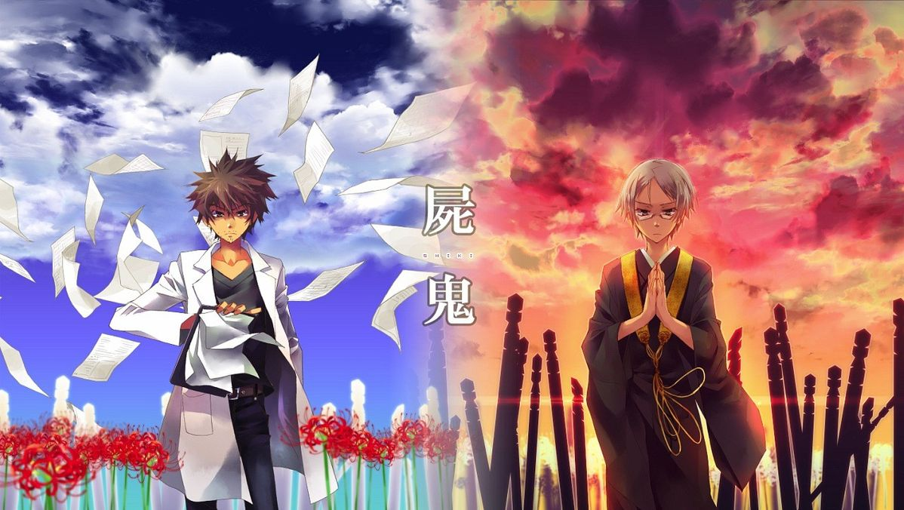
Los ejes están en el orden en el que irónicamente revelan su posición en la toma de decisión política, sin
embargo la actual
vigencia de Sotoba nos dice de la vaga decisión que supone los apellidos Ozaki y Muroi, y la aldea actualmente
se ve regida por otros sistemas y estos se ven reducidos
a la "consulta". Natsuno reflexiona al respecto reconociéndose a si mismo ajeno al pueblo y teniendo deseos de
escapar, pero no solo traza una línea entre lo
que le concierne y no, si no que traza su línea en relación a otros es decir, el sentido unitivo de la
gente del pueblo hace perder sentido del yo, al sentido del nosotros.
Natsuno no quiere subsumirse la narrativa expectación al que supone subyugarse a un Ego ajeno en caso de
Megumi especialmente no buscaba inmiscuirse en su fantasía
adolescente, y Masao al recriminarle sobre su falta de empatía, no hace más que resaltar el sentido colectivo
que hace pensar que Natsuno es cretino a pesar de que
sufrió acoso por parte de Megumi el sentimiento de pena aún sintiéndose ajeno.
No se trata en ningún momento de ser o no racional, sino que habla en un sentido único en el como la muerte se
manifiesta en Sotoba, la conversación de Seishin y
la niña de los Kirishiki deja en velo el sentido en el que los aldeanos ven la muerte bajo el Ego de Sotoba,
Masao cae en contradicción al ser consciente que ni
conocía mucho a Megumin, el sentido en el habla Natsuno en ese aspecto quiere decir entonces que no es
despectivo (no la desprecia) no la "ataca" ni la "ofende"
(pues los muertos no sienten ni padecen) si no que el piensa el sentido de Megumin es el sentido del colectivo
(de su familia) y debe ser extendida al pueblo
(A Natsuno por defecto).
Omnia mors aqequat - El postulado de Sunako
"... La aldea en sí era una existencia como una única forma de vida orgánica. Surgió a través de un proceso
complejo, con varios sistemas retorciéndose dentro de sus límites.
Pasó por cambios mientras se escindía en porciones multiplicadas de sí mismo, voraces y regeneradoras, para el
mantenimiento de todo el ser... Como un animal vivo..."
- Capitulo 7 - Parte 6
El reconocimiento del concepto de Sotoba como un conjunto complejo mecanicista en la perseverancia de los
acontecimientos históricos data en primer lugar la transfiguración de la figura metafórica primordial.
(Unidad de Sotoba véase su desarrollo más adelante)
1. Notas del Traductor:
Todo gira entorno a Uchi/Soto
Uchi-> Identifica el yo mismo o nosotros así como adentro.
Soto Afuera (nunca como pronombre de segunda o tercera persona)
Desde la conversación de Hasegawa ya se habla del sentido de la unidad que comporta los aldeanos con respecto
a su pueblo y como es que se manifiesta la muerte y dicha reacción ocurre en las numerosas muertes precedidas
(7 hasta el momento) y cada una con sus particularidades en relación al tema, siendo la recepción de las
mismas un reflejo de lo que se construyó con anterioridad.
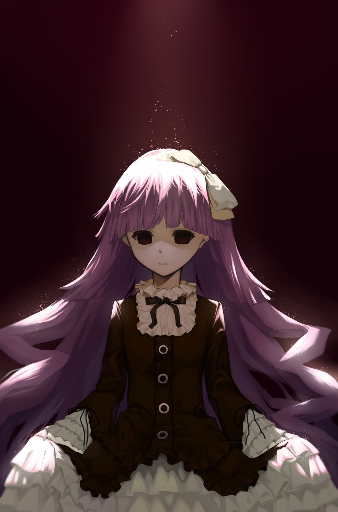
"La muerte iguala todo" en un sentido lo que la niña de los Kirishiki declara ante Seishin es la malversada configuración del Ego rural que comporta la reacción de los aldeanos y su distal recibimiento en relación a una muerte y otra.
2. Notas del Traductor:
•Kawaii/Kawaisou, Oshii/Ito-oshii
Cuando Sunako habla de precioso y lamentable, las palabras que usa en japonés son kawaii para lindo (precioso)
y kawaisou para lamentable, a menudo usado o dicho al decir "pobre" o expresar simpatía. La palabra kawaii se
compone de kanji para aceptable y amor, La palabra kawaisou se compone del mismo aceptable, piedad (compasión)
y pensamiento.
Esto se tradujo imperfectamente pero de forma aceptable en inglés.
También supone que la palabra itooshi utilizada para referirse a alguien amado. generalmente en un sentido
romántico, puede estar compuesta por la palabra 'amor (laltad como (w)ai en kawaii o ito en itooshii) de
lindo/precioso y oshii LU, por piedad (lastima), ausencia (carencia) o arrepentimiento
Notas de Mayo
La psicología de Seishin
- La psicología de Seishin
- El sentido de trascendencia de Ozaki/Seishin
- La muerte epidémica y el sentido de la unidad de Sotoba
...A un hombre le creció un cuerno. De repente, un cuerno le creció, y temió que se había
vuelto diferente del hombre común. Debido a que sería discriminado sin razón, estaba desesperado por
ocultarlo. Pero, el hombre terminó siendo adorado como un Dios ¿no? Y se le exigió hacer milagros. Aunque no
tenía el poder de hacer milagros, solo tenía un cuerno.
El hombre se sintió aliviado de que no fuera discriminado, pero no tenía el poder de hacer milagros. Temía que
otras personas supieran eso, que no era una señal de ser un Dios, que no era más que una prueba de que era un
hereje. Pero nadie podía culparlo por el hecho de que no ocurrió ningún milagro El hombre era un hereje
después de todo. Fue llamado un dios y excluido porque estaba consagrado. El cuerno era la marca de un hereje.
Como la marca puesta en Cain. Por eso fue negado y excluido injustificadamente de la sociedad.
El minotauro mismo sabía que no era un dios, y temía que lo rechazaran, así que él mismo hizo un milagro, ¿no?
Al matar a un pecador nació una maldición. Los aldeanos le temieron y lo honraron, construyendo un muro. En
otras palabras, lo mantuvieron a distancia, ¿verdad? Y por cada uno de los que fueron asesinados se construyó
otro muro, hasta que se construyó un gran laberinto a su alrededor. Estaba escondido en lo
profundo del laberinto. Y para apaciguar su ira, presentaron sacrificios. Lo que quería era que se le
permitiera entrar en la sociedad como un dios, pero la sociedad lo rechazo constantemente... - Volumen 02 - Capitulo 7

El sentido de trascendencia de Ozaki/Seishin
Tras lo acontecido con la previsión de la posibilidad de una enfermedad epidémica, Muroi junto a Ozaki se
reúnen y toman planes individuales para la recolección de datos sobre el pueblo y poder constatar una epidemia
y pedir ayudar a la administrativa vigente. Durante
ese periodo vemos la introspección que se hace en Seishin principalmente por sus 3 contados en encuentros con
Sunako que partiendo de su literatura revela facetas de Muroi no antes vistas o presentadas o bueno no todas
en su mayoría.
Al principio la alegoría de Caín y Abel en el Ensayo e Seishin podría confesar la culpa vinculada a la moral
trascendente la cual mencioné en mis primeras notas. Sin embargo Sunako parece extender dicha acotación, en
los escritos de Seishin parece que el autor esboza un sentimiento llamado "abandonado por Dios" vinculado
lógicamente a lo antes expuesto pero ahora extrapolado a toda actividad rudimentaria que el
autor ejerce pues Sunako como bien menciona es un sentimiento contradictorio con las situacion que se
encuentra Muroi una persona apreciada llena de amistades con labores imprescindibles y aprecio mutuo por un
pueblo que en sus mismas palabras dice amar y dice considerar importante.
Seishin es de religion budista pero se muestra muy ávido en textos de otras mitologías y religiones, según
Sunako Seishin tiene una predilección por las figuras bíblicas. En la conversación final se ve como Seishin
describe dicho sentimiento en su texto absorbido por la vanidad de no ver nada hermoso en lo que llama mundo.
Atravesado por la indiferencia y
sus intentos suicidas de acabar con ese sufrimiento y destensar su emoción descrita por ser abandonado por
Dios.
Establecí notas antes que el eje de la religión es el eje trascendente de Sotoba y vemos al catalizador de
esta idea entra en contradicción por Seishin pues recordemos que el personaje que redescubrió el sentido de la
unidad de Sotoba fue el en primer lugar es decir el mismo ya se considera foráneo o ajeno a esto a lo que
llama "unidad".
Cual vanidad del Eclesiastés Muroi atisba bellos paisajes teñidos de indiferencia, su literatura revelas
facetas escondidas tras los intentos de suicidio por escapar de las jaulas nihilistas, cuando está triste
viaja a un templo sagrado abandonado por 2 razones.
- Porque es sagrado incluso si ya no es objeto de adoración.
- Porque no hay Dios adorado vigente, como una trascendencia sin cabeza una nada numinosa y estéril.
Siente que en este vacío trascendente solo una nada transformada en religión abandonada como un Dios sin luminosidad puede darle algún tipo de aliento.
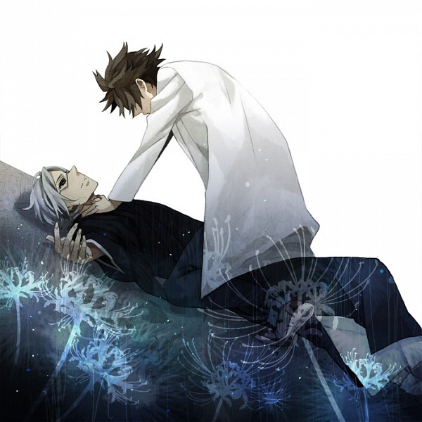
La muerte epidémica y el sentido de la unidad de Sotoba
Ozaki a diferencia de Seishin tiene problemas, en concreto se ve atrapado en compromisos familiares que
condicionan sus libertades como individuo. La noción de trascendencia en el esquema Inmanente presentado en el
apellido Ozaki estriba en Toshio en su cuestión sobre libre albedrío.
Tanto Sheishin como Toshio fueron cargados con sucesiones no solicitadas sin embargo aunque tomaron el mismo
camino ambos tomaron nociones distintas. She ishin aún siendo agradecido y considerado con su puesto, pueblo,
amigos y familia dentro de si hay cierto descontento que lo lleva a intentar suicidarse, el hecho de intentar
morir revela que no hay vía de escape para aquello que lo enjaula en su cielo teñido de vanidad.
Ozaki por lo contrario tomo el mismo camino pero no intenta morir, mejor dicho se ciño a su destino de tal
forma que puede llegar a morir, no intenta suicidarse pero no parece importarle morir le reclama a su madre su
vida tiene valor en utilidad como sucesor del apellido Ozaki y no tenía derecho a preocuparse por su bien
estar.
Tenía 2 opciones entre seguir con su apellido o abandonarlo pero a Toshio la cuestión disfrazada de libertad
le parece una patraña, un engaño trascendente que ignora por completo las necesidades de sus semejantes Toshio
eligió su camino, nadie lo obligó y aunque no es infeliz y tampoco es feliz es firme ante la decisión que tomo
y no parece mostrar lamentación al respecto.
No se trata de olvidarse de si mismo y cumplir expectativas ni siquiera se trata de expectativas en primer
lugar. Se trata de la noción ética que rige su vida Toshio vio que lo necesitaban en el pueblo y el podía
cumplir su necesidad y más importante quería hacerlo se aferra su destino y no solo eso, lo camino y lo
transita a la manera que guste, por ejemplo no dejando sucesores para joder al apellido Ozaki o lanzandose al
peligro sin importar mucho si muere.
2 esquemas en contradicción bajo 2 catalizadores antepuestos en rigor de un camino idéntico en vistas de una
trascendencia distinta la Ética de Ozaki y la Ética y Estética de Seishin.
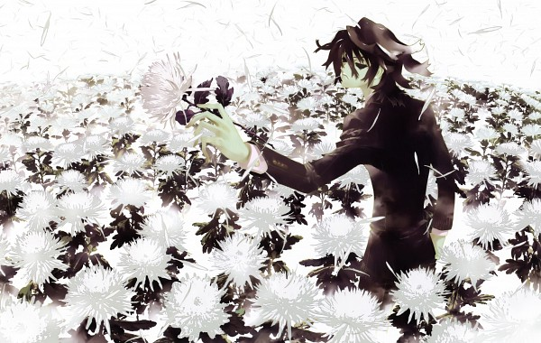
Él sentido de unidad de Sotoba evidenciado en esta epidemia se deja ver en las discontinuas muertes y
diferentes reacciones supeditadas a la región en las que se encuentran, los rumores como era de esperar se
esparcen de forma rápida y ahora estamos en la situación límite en el que la unidad se ve suspendida en una
multitud de reacciones de aversión frente a los acontecimientos de muerte ocurridos en estados escasos meses.
"El pueblo está rodeado de muerte"
La situación se presenta externa a la unidad de Sotoba los aldeanos reaccionan de manera sorprendente al ver
la cantidad de muertos, y no parece parar la especulación acerca del matiz foráneo que presenta la sucesión de
muertes, los aldeanos perciben dicha continuidad como una sucesión causada por los Kanemasa (la cual parece
ser un matiz importante) pero que lejos de eso solo revela el carácter unitario que presenta el pueblo con sus
semejantes
Solo 3 personas son conscientes de esta rareza (Toshio, Muroi y Yuuki Koide)
El yo entre la posición dicotómica de Toshio y Seishin
Ozaki Toshio eligió un camino en relación a la Ética y su compromiso está plenamente implicado en su "Yo"
cual es el problema, básicamente buscar la ética en vistas del Yo. Ozaki manipula la situación para que el
tenga control de ella, miente a Seishin oculta información y termina por perjudicar más de lo que intenta
proteger, no es por orgullo, es por su noción del "Yo" arraigado siempre en este yo autárquico (idealismo).
Seishin confronta a Ozaki recriminando su autarquía, por qué por una parte la noción de ese Yo solitario y
central del mundo que dice ser les pasa factura tanto en su acción (Pues se
desgasta, no come, casi ni duerme, y siempre trabaja, y si no llega a ser por si personal quería ayudar
seguiría haciéndolo todo solo) como en su idea (intenta planificar la situación solo, ocultando información a
la administración para evitar arbitrariedades una sospeche legítima debido al contexto político que presenta
la obra pero en idea más primordial, es Toshio no queriendo recibir ayuda externa ni orden alguna)
La inanidad del yo
El idealismo objetivo de Sheishin subordina el Yo con lo trascendente, Ozaki sin duda se desvive por el pueblo
pero lo hace tanto que cree ser el único capaz de hacerlo, un complejo de conductas narcisistas y negligentes
lo lleva a cometer engaños y todo para mantener la ilusión de que el yo sostiene su realidad máxima, sin
embargo Seishin al reclamar su mal obrar demuestra 2 cosas:
1. El idealismo de Ozaki
2. Su propio Idealismo
Seishin no solo descentra el yo si no que lo menosprecia, lo devalúa de tal forma que subordina su Yo al mundo
y el mundo a Dios.
"Las personas creen ver objetos porque creen que no hay nada real fuera de ese Yo
centrado y universalizado."
Dicho Dios resulta inaccesible a Seishin debido a que en el fondo no cree en el, o mejor dicho considera ídolo
todo concepto trascendente que se muestre en su finito yo. Este "motivo" el cual según la propia lectura ya
circunscribe nociones "más allá del lenguaje y todo signo o marca humana" es el
idealismo del Seishin
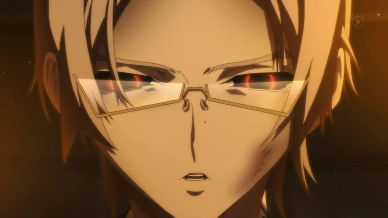
Estructura metafórica
Estructura geológica - Contexto social y económico (Autosuficiencia de Sotorba)
Sotoba como estructura geológica se presenta en su historia en un pueblo nacido de leñadores siglos atrás, dicha estructura como pueblo sobrevive a pesar de su baja población siguiendo ciclos de muerte y natalidad continuos y coordinados permitiendo su supervivencia en el devenir de los años, en la propia novela se resalta la específica particularidad que brota el sitio como si fuese un ente autónomo y de autosuficiencia (Conatus aah quote básicamente)
Estructura antropológica- Contexto sociopolítico y estructuras familiares
(Unidad y Metafísica de
Sotoba)
Las personas perciben al pueblo como una unidad excluyente, suprimiendo cualquier instancia no relativa a la aldea como foráneo así como la muerte "el pueblo está rodeado de muerte" es decir no está en el pueblo si no fuera de el. La estructura estriba en lo ya explicada de los 3 ejes (Ozaki/ Kanemasa/Muroi
| Estructura Metaforica | Exterior/Interior |
| Eje Trascendente | Seishin Muroi |
| Eje Trasc/Inmanente | Kanemasa |
| Eje Inmanente | Toshio Ozaki |
(Rotulo: Recordemos que Kanemasa decide mediante Ozaki/ Muroi)
Las Estructuras y nociones individuales del yo
Los personajes secundarios se presentan circunstancialmente y solos
(Toshio,Natsuno,Seishin,Sunako). Profundizan las nociones en cuestiones del pueblo, las gentes y finalmente
las nociones regidas por los catalizadores.
El Templo (Eje Trascendente) tiene la figura de Sheishin (Catalizador), tiene 2
formas, su dramaturgia social, donde actúa como Monje hornado, trabajador y agradecido. Y su etapa "nocturna"
donde escribe novelas siniestras, va a templos abandonados, escribe herejías y sobre todo tiene problemas con
su Fe y sus nociones existenciales.
1º Contradiccion: En el eje Trascendente su catalizador presenta rechazos de sus
propias vistas ocultándolo con facetas literarias y rutinas particulares. El Hospital (Eje Inmanente) tiene la
figura de Ozaki Toshio (Catalizador) el tiene solo la forma de actuar, es impulsivo, temerario, inteligente y
directo dice las cosas que son incluso en momentos fuera de lugar, es práctico y furtivo.
Sin embargo dicha actitud la lleva al limite se desgasta hasta que sangra importando poco o nada la vida
propia y se centra tanto en ese yo autárquico que lleva ese dolor al limite al pensarse único en poder
salvaguardar la aldea por si mismo.
2º Contradiccion: En el eje inmanente su catalizador lleva a la trascendencia
dicho límite, pues cruza la línea Ética en el momento en el que se entrecruza al yo solipsista y olvida a los
otros en busca de un absoluto que salvaguarde el mundo y finalmente a Dios (Ética de
Ozaki - El absoluto). En el eje trascendente su catalizador lleva a la trascendencia dicha límite pues cruza
la línea Ética en el momento en el que se entrecruza con la develación del yo y la vanidad del mundo. Demerita
todo arsenal o actuar humano por el mero hecho de no presumirse divino, todo actuar en rigor de la justicia
sin mostrarse trascendente es para Seishin una injusticia.
2 esquemas en contradicción bajo 2 catalizadores antepuestos en rigor de un camino idéntico en vistas de una
trascendencia distinta a la Ética de Ozaki y la Estética de Seishin.
Dicha Ética de Ozaki culmina con el yo trascendente y solitario (complejo de mesías) olvidando al otro y
ascendiendo al mundo (Subsume la realidad a su conveniencia) y finalmente a Dios (Es decir el Yo. El
Cumplimiento Ético del ideal narcisista que ve en Dios a un yo absoluto).
Dicha Ética y Estética de Seishin que culmina en la disolución del Yo (Yo devaluada a la inanidad) y solitario
también olvidando al otro y accediendo al mundo (mediante la vanidad)
y finalmente a Dios (La nada, las ilusiones del sujeto, las mitologías, nihilismo posmoderno etc).
"No lo sé. Independientemente de la persona de la que estemos hablando, creen que ellos mismos son el centro del universo. Todo lo que está fuera de símismo es simplemente reconocido como un objeto, no pueden escapar de la idea de que son el único centro verdadero. No pueden aceptar que no son más que una de las masas que dicen ser el centro. Por lo tanto, quedan atrapados en la situación y se niegan a ser relegados a un papel menor"
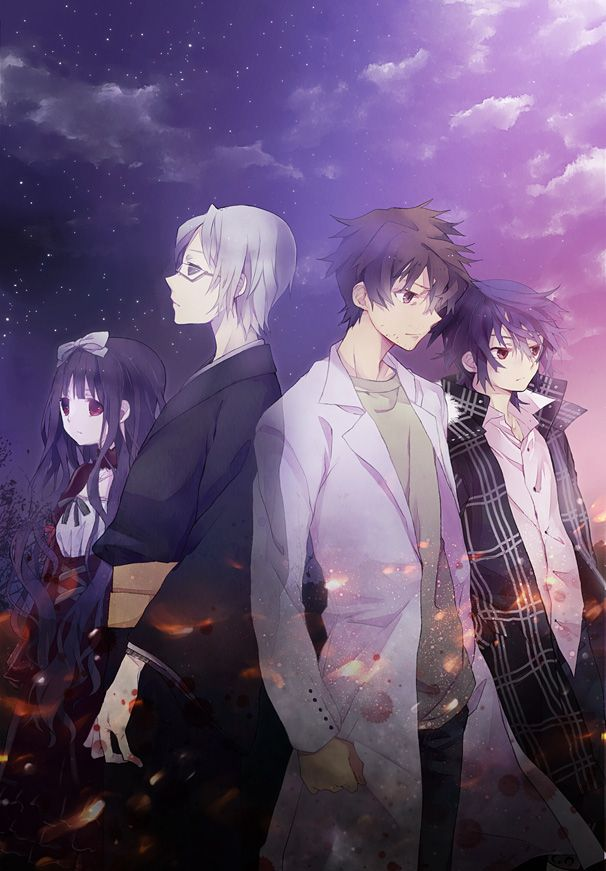
Alegorías y dramaturgia
Caín y Abel - Interpretación de Sunako Notas - Shiki
La obra comienza con la cita del Genesis 4 aludiendo a las figura del exilió de Caín tras el asesinato de su
hermano Abel. En el comienzo de la obra la cita escenifica lo que vendría a
ser la presentación de los conceptos que a posteriori tomarían un sentido en un poema, pero también
introducirían la psicología de Sheishin desarrollada hasta ahora en relación a su nihilismo posmoderno y su
arraigada culpa nacida de la injusticia arremetida contra la moral trascendente a la que busca de forma
inconsciente bajo sus escritos racionales objetivados en sus obras literarias. Obras literarias re
interpretadas bajo Sunako como un nódulo de contradicciones sobre lo que verdaderamente siente Sheishin a como
se muestra en su vida real.
Ahora todo toma un rumbo mucho más sustancial cuando vemos varios puntos entretejerse bajo los nuevo
descubrimientos de Toshio que llevan a Seishin a tener que poner a prueba su fe misma y enfrentar sus propias
contradicciones. Su moral representada por Cain bajo la figura del exilió se rompe y se retuerce bajo la
interpretación de Sunako Adán y Eva cuando cometieron el pecado de la humanidad y fueron expulsados del
paraíso y desamparados por Dios fueron exiliados del jardín de Edén. Sin embargo Caín nacido ya con culpa
(pues todo humano nace con pecado, el pecado original) mata a su hermano y es "condenado" al "exilio" →
tierras de Nod. Tierras de Nod puede denotar más una condición que un lugar, primeramente porque el
pensamiento cristiano discierne solo 2 lugares cielo (paraíso) y tierra (infierno) no hay un infierno, la
tierra es el infierno mismo, entonces...
¿Donde fue exiliado Cain si ya estaba en tierra de pecado?
Se interpreta lógicamente que Adam y Eva fueron exiliados bajo las dificultades de poder ellos mismos cultivar
sus esfuerzos y recoger sus cosechas, pero Caín fue exiliado bajo las tierras de Nod las tierras estériles e
infértiles condenado a un camino errante.
Y él le dijo: ¿Qué has hecho? La voz de la sangre de tu hermano clama a mí desde la tierra.
Ahora, pues, maldito seas tú de la tierra, que abrió su boca para recibir de tu mano la
sangre de tu hermano. Cuando labres la tierra, no te volverá a dar su fuerza; errante y extranjero serás en
la tierra. Génesis 4:10-12
La interpretacion de Seishin:
| Paraíso | Tierra Comun | Tierras de Nod |
| Dios | Adam y Eva | Cain |
Bajo la óptica en la que Caín bajo en la de un exiliado más grande el abandono de Dios de todo amparo divino incluso de los frutos comunes de los cuales Adan y Eva aún tenían (labrar tierras y recoger sus frutos)
Bajo la óptica en la que Caín fue exiliado a un paraíso porque después de todo no hay más lugares que los
edificados es decir el paraíso construido por Dios y la tierra si alguien es exiliado de la tierra no puede ir
a otro lugar que no sea el paraíso, aquí la interpretación siniestra de Sunako pues ve en la figura de Caín un
consuelo de haber sido exiliada al Paraíso junto con Dios pues ya no necesita cosechar, labrar y sembrar para
vivir, solo necesita matar y hacer permanente la inmortalidad y vivir en su comunidad de Shikis asesinos. (Un
paraíso de la inmortalidad).
Notas de Traductor Japonés - Inglés
Takasago
Teatro musical japonés antiguo, que se centra en gran medida en la danza y los movimientos precisos que
(idealmente) no han cambiado a lo largo de la décadas. Los bailes como obras de teatro se realizan sobre la
base de seguir movimientos precisos en lugar de la expresión individualista como es común en otros tipos de
teatro, especialmente en los más modernos.
Muchas obras de Noh tampoco tienen los arcos de la historia tradicionales con un climax y desenlace, aunque
hay un ritmo requerido tomado de los festivales de Kagura que los anteceden. Así como la danza Kagura tiene la
bienvenida, el entretenimiento y la despedida animada, aunque quizás violenta, el Noh tiene un comienzo lento,
una acción ascendente y luego una aceleración con un final rápido.
Tradicionalmente interpretado por hombres, el sexo, la edad e incluso emociones se expresan con máscaras de
madera cuyas expresiones pueden cambiar en función de las sombras y el ángulo. Imagen de ejemplo de una
máscara que muestra muchos ángulos y emociones de Wikimedia commons (dominio público).
La mayoría de las historias involucran elementos divinos como Onis o Dioses, y muchas de las máscaras pueden
tener un papel distintivo al igual que ciertos nombres de personajes representan un cierto tipo de personaje,
incluso si no es necesariamente el mismo personaje en cualquier continuidad canónica, al igual que el
personaje de Hachigoro antes mencionado en Rakugo. (NTE: el rakugo se explicó antes, en resumen, vendría a ser
una especie de monologo, hachigoro seria quien hace el monologo, generalmente de tono comico y con el fin de
actuar como bufón)
Las obras de Noh se dividen en cinco categorías.
Waki-noh / Shura-mono / Katsura-mono/Kichiku-mono/ Kyojo-mono
Waki - noh es la obra que representa la divinidad disfrazada como humana y revelada finalmente a un humano
como la obra "Takasago".
Shiki en el volumen uno hizo especial énfasis en la existencia de Mudanzas Takasago, no solo por su
extravagancia horaria si no también por la representación simbólica y actualmente mordaz que subsumida entre
la existencia de Mudanzas Takasago y el ritual Mushokuri la primera vez al encuentro de Sotoba y los
Kirishiki, este entrelazamiento simbólico no solo atribuye más peso a los acontecimientos pasados y la
especial focalización centrada en los detalles infimos que al principio que no les dimos mucha importancia, si
no también una retrospección más profunda en relación a la carga dramatúrgica que la autora ya en varias
ocasiones demuestra tener en sus diálogos.
Sanemori
Esta obra toma como fuente principal la "Historia del clan Heike" (Heike Monogatari), la crónica militar más
famosa del japón que se refiere a los días de hegemonía de los Taira (Heike) durante cerca de veinte años y
los cinco años de guerra con los Minamoto (Genji), esto es a partir de 1160.
Saito Betto Sanemori fue un famoso guerrero que luchó en el bando de los Taira (Heike) en contra de los
Minamoto (Genji), aunque tiempo atrás había pertenecido al bando contrario. No se sabe con certeza el año de
su nacimiento pero se dice que murió en 1183 cuando tenía cerca de 60 años. Ya siendo maduro y con cabello
blanco, cambia el color de su pelo para parecer más joven y así poder combatir contra los guerreros jóvenes
aparentando juventud. Es muerto en batalla y se dice que cuando su cabeza es llevada como trofeo ante el bando
contrario, casi no lo reconocen por causa de su cambio de apariencia.
Sanemori en la historia de Sotoba se menciona bajo los orígenes del ritual de la túnica utilizada en el
Mushokuri Llevado acabo al principio de la novela, Yuuki pregunta sobre sus origines, y no es otra que la
historia del teatro Noh (Sanemori) la cual la autora utiliza por vez primera vez 2 repertorios del teatro
japonés para dotar al encuentro entre Sotoba y los Kirishiki de forma mucho más rica que lo fue en una primera
lectura, una vez resuelto la naturaleza de los Kirishiki, la ironía de los detalles anteriores solo hacen de
esta obra un manjar de introspecciones interesantes.
Concatenación y conclusiones generales
Concatenare todas las ideas esbozadas con anterioridad:
Ten en cuenta que la novela abarca los acontecimientos del anime hasta el capitulo 16, lógicamente no tiene un
final traducido hasta ahora, asique me limitare hablar bajo ese limite que es hasta donde he leído.
La Etica de Ozaki
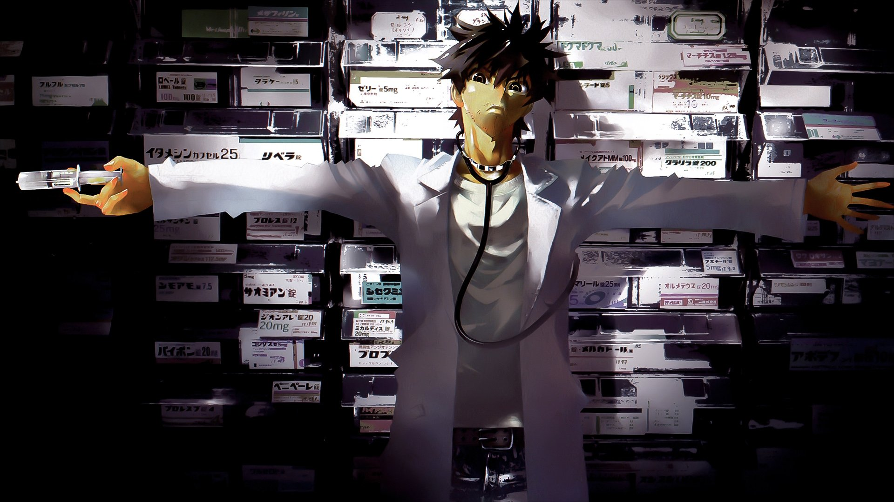
Artículo una metafísica especial para entender los esquemas y las ideas presentadas en Toshio Ozaki, se presenta una ética "yoeista" en orientación y culminación del yo.
| Yo | Mundo | Dios |
Ozaki se muestra profundamente egoísta en relación a su ética principalmente por el primer rotulo el "Yo". El
yo de Ozaki es un Yo narcisistas, un yo que cree ser un pilar universal y quiere asumir el control bajo sus
propios términos y directrices, este yo vela por los otros (Mundo), pero siempre en orientación y en vistas
del un yo. Ozaki por ejemplo no ve en su esposa más allá que una simple herramienta para poder atestar un
golpe a su apellido, utiliza su "libre albedrío" si bien no ignora a los otros, pues acepta la necesidad de
ser Doctor en un pueblo que lo necesitaba, en el momento de la verdad Toshio cuando acaeció lo de los Shikis,
no ha hecho más que revelar su verdaderas naturaleza, haciendo cosas a espaladas de Seishin, manteniendo a
oscuras la situación a ojos públicos las circunstancias en Sotoba, se pretendía pilar e empieza a ignorar su
entorno, es desconsiderado con sus empleadas, familiares, amigos y finalmente culmina con su ética.
El Dios de Ozaki revela el "YO" el Ideal Ético que le permite arrebatar la vida a su esposa en su estado de
Shiki, cuando se encuentra con Seishin re recalca esta cita:
...Hice una elección, actúe en consecuencia........Está es mi justicia, a menos que
tengas algo que decir, largate …-V.03 - CAP:12
| Yo | Mundo | Dios |
| Ética egoista de Ozaki | actuar en vistas a al Yo | Culminación que revela el "Yo" de Ozaki |
Esto no desacredita o desatiende que Ozaki hace una "buena acción" pero bajo cierta medida hay que separar cosas, lo que hizo tuvo un uso y una utilidad practica bajo el bien de Sotoba, pero el no se considera altruista o un héroe, porqué en esencia es egoísta, es importante trazar esta línea y demarcarlo porque las acciones de Ozaki no están bien bajo cualquier criterio, porque lo único que han demostrado sus acciones es mostrar lo idiota que puede llegar a ser y ser un completo desconsiderado con su entorno.
Ética de Seishin
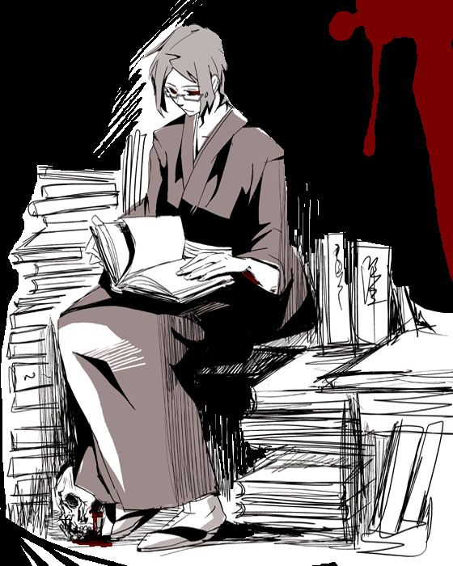
Seishin és completamente al revés, el yo de Seishin es devaluado y desestimado, se abre al mundo frente a la vanidad y culmina con el abandono de Dios.
| Yo | Mundo | Dios |
| Vacuidad ilusoria | Vanidad e indiferencia | Abandono de la trascendencia |
Este esquema obedece en un "no ensuciarse las manos" pues ningún instancia o disposición humana se presta
(según la lógica de Seishin) para ejercer justicia alguna, porqué toda ética o justicia ejercida bajo los
rótulos humanos no es lo suficientemente divino. Muroi mismo admite convertirse en hereje al básicamente
limpiarse las manos y encerrarse en sus pensamientos.
En la discusión con Toshio, lo que cabrea a Ozaki no es tanto el hecho de que se límpe las manos, si no su
crítica que encierra en si misma una idea hipócrita de intentar determinar
que actuar o que justicia es lo suficientemente "divina" para poderse ejercer, porque Seishin no se inmiscuye,
se sumerge en su completo idealismo.
No hay una disposición moral suficiente para el señorito, aun así las acciones de Toshio son criticables en
otras nociones, pero las resaltadas específicamente por Seishin no.
Toshio tomo la vía más eficiente, la erradicación de los Shikis, para le es mas eficiente saber defenderse de
esos seres que curarlos y para hacerlo necesito realizar las acciones que realizo para obtener
conocimiento.
Enredado en su duelo poético y mitológico Seishin es victima de el mundo de sus pensamientos.
Las 3 nociones primordiales
Estos 2 esquemas y catalizadores se Articulan en las nociones metafísicas de Sotoba antes esbozadas
| Estructuras Metafísicas | Sotoba |
| Autosuficiencia | El trato de Sotoba el pueblo como un concepto estructural que se autoabastece a si mismo y se autorregula a lo largo de los acontecimientos históricos. (Ej: La cita de Sunako que establece a termino explicito la "autosuficiencia" del ente llamado "Sotoba") |
| Unidad | El sentido unitario que perciben las personas dentro de Sotoba y exluyen todo lo foraneó y lo relativo a el, pero siempre en rigor no tanto del pueblo en si, si no algo relación a las estructuras antropológicas de las familias (Ej: Su señalamiento constante a lo extravagante que resulta la Mansion Kanemasa) |
| Binomio Dicotomico | y finalmente la separación dicotómicas de interior o exterior (Uchi/Soto), que vendría a representar lo que pertenece y no al pueblo, ya no en tanto relación a las personas si no en relación a conceptos más abstractos (Ej: Ensayo de Seishin, "El pueblo esta rodeado de muerte" o tambié lo que menciono Hasegawa en relación a los "limites" grises que presenta algo que se dice "interior" o "exterior" ) |
Este Nodulo de figuras metafísicas (Unidad, autosuficiencia, binomio) se articulan bajo una idea vigente en la obra, el conatus, el ser persevera en el ser etc...El rotulo metafísico de la persistencia del ser para con el ser (pues todo ser vivo busca "seguir siendo") es donde se adscribe estas 3 nociones pues básicamente se extiende esta idea bajo cualquier parámetro existente, en el concepto de Sotoba, en la naturaleza de lo Shikis focalizada en la ética de Sunako como culimen de las 3 éticas presentadas en la obras.
Etica de Sunako
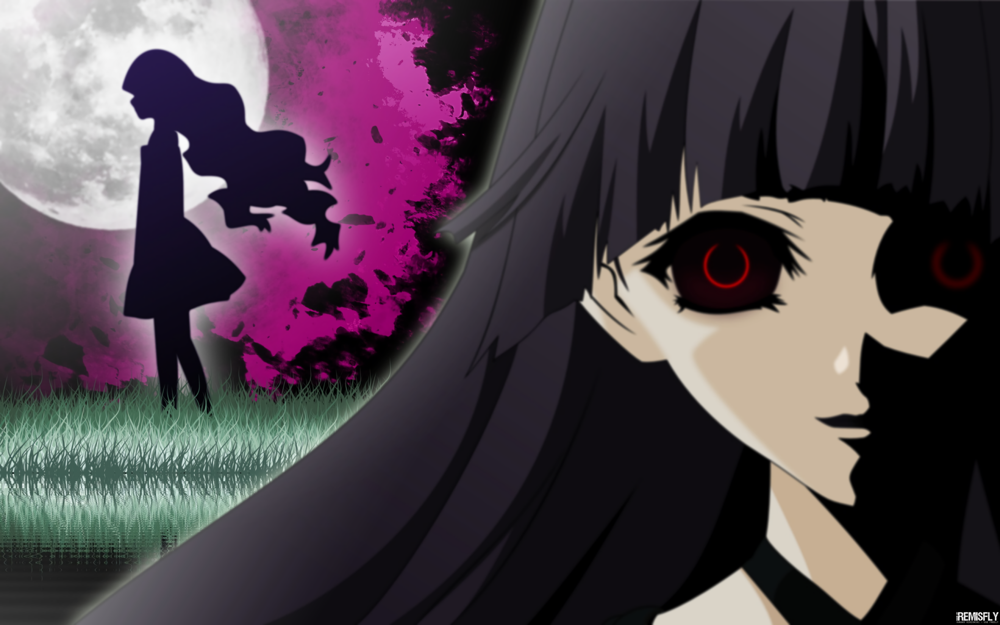
La Ética de Sunako se adscribe a esta idea como fundamento ultimo de toda la obra, vela por cualquier acción
que predique al organismo sobrevivir y seguir siendo, les despoja a los humanos el privilegio del único ser
que puede articular o expresar su negación a morir, y lo extiende a todo ente habido y por haber en la faz del
mundo. Una acción es buena según la
ética de Sunako bajo el rotulo de que el organismo del Shiki come, se alimenta y sobrevive y ve esa acción
buena inversamente porque entiende que todo ser persiste y para persistir hay que matar.
Esto se vincula a la re-interpretación grotesca de Sunako del Genesis antes mostrada: Re-interpretación de
Sunako
Básicamente Sunako estaría articulando su Ética bajo el Nodulo de Dios, pues se siente desterrada al paraíso
límite donde su entorno se basa en básicamente matar, comer y vivir.
| Yo | Mundo | Dios |
| Enaltecido en vistas a un Dios | Indiferencia y orden de Dios | Dictatum Ético:Ser persevera en el ser |
Según su ética entonces la solución para no llorar por seres queridos seria matar a tus propios seres queridos, ya que si estos están supeditados al mandato universal de muerdes o te muerden, alguien (homicida, accidente, catástrofe poco importa) o algo (Enfermedad) se lo llevara tarde o temprano asique la única manera de preservarlos es matarlos tu mismo. De ahí su juego lingüístico espeluznante de equipar adorable y lamentable (Kawaii/Kawaisou, Oshii/Ito-oshii -> 2.Notas del Traductor )
Apuntes Finales
Conlusion
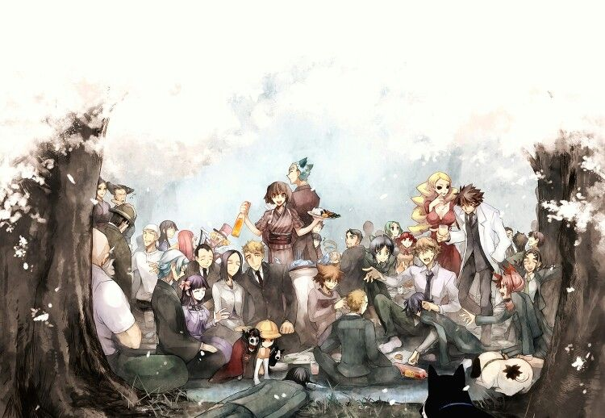
Fuyimi Ono tiene una destreza como Shiori Ota la cantidad de detalles que dan vueltas a posteriori me recordó
a un volumen de Sakurako, aunque son retrospectivas mucho menos sorprendentes no les quitan peso, tiene un
conocimiento muy basto en relación a los conceptos mitológicos, poéticos, literarios y religiosos un
repertorio de alegorías tan mordaz como Nomura en literatura o Hikaru en música, pero he de decir que la forma
de entablar los diálogos y sus formas de abordar sus respectivas problemáticas me recordó a atisbos de
Yamagata en el volumen 3 de Tatakau Shisho.
El uso de su contenido no llega a ser tan doxografico como Satoshi Itoh, tiene un estilo que me recuerda más a
Ubukata, sencillo discreto y audaz, he de decir que quedé bastante sorprendido entre mi lista de autores
Fuyumi se ganó un puesto importante a tomar en consideración.
Shiki es una buena obra, sin embargo no lo he leído por completo y falta ver próximas traducciones, el anime
esta muy mal adaptado asique lógicamente no tomare ningún elemento de ahí, quizás lo haga en el manga, pero de
momento me remito por completo a la novela.
Redes Sociales